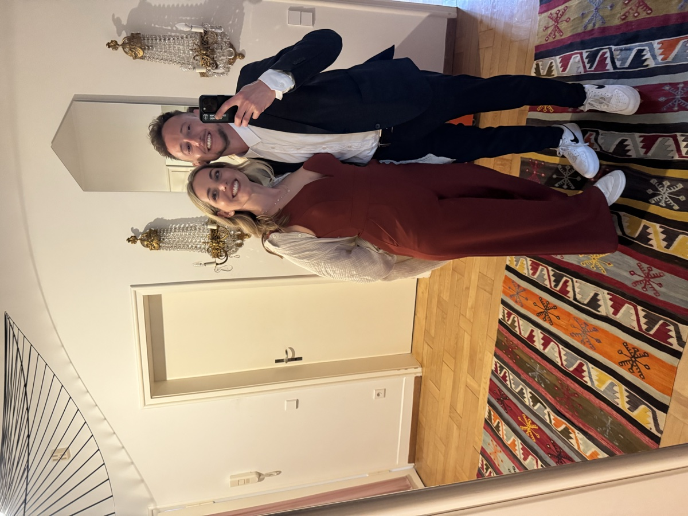
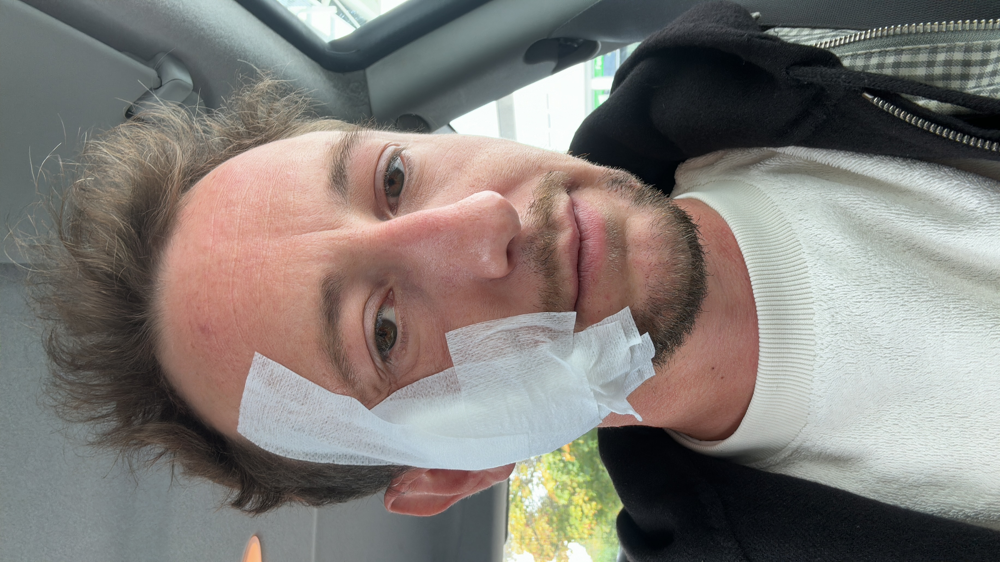
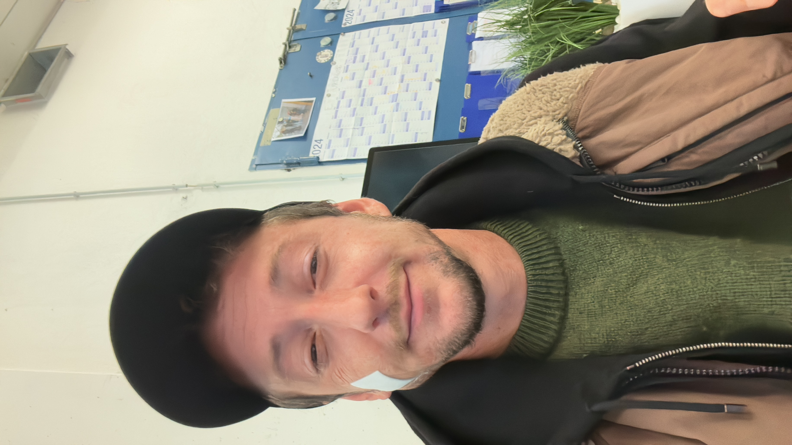
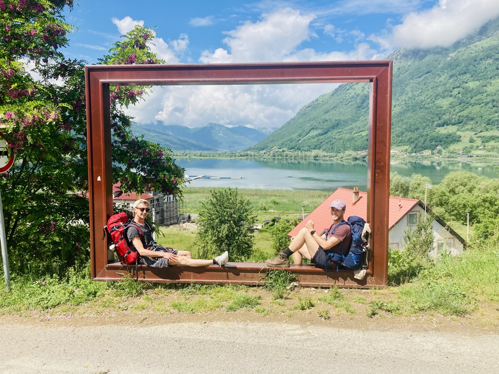

Kein Arzt. Kein Influencer. Nur jemand, der seit über zwanzig Jahren mit Akne inversa lebt und irgendwann aufgehört hat, alleine damit klarzukommen.


Links: Ich, wie ich die meiste Zeit bin. Rechts: mit der Person, die alles verändert hat.
Ich bin Robin, geboren am 11.11.1990, und seit meiner frühen Teenagerzeit mit Akne inversa (Hidradenitis suppurativa) konfrontiert. Mit 14, 15, 16 kamen die ersten Beulen — hinterm Ohr, am Kopf, auf beiden Seiten. Meine Eltern waren verzweifelt, die Ärzte ratlos. Alles wurde auf Stress geschoben. Auf mich geschoben.
Niemand konnte einen Namen dafür nennen. Und wer keinen Namen für seinen Schmerz hat, zweifelt irgendwann daran, ob er überhaupt existiert.
Die Krankheit hat sich vor allem am Kopf und hinter den Ohren ausgebreitet — so nah am Gehör und an Gesichtsnerven, dass viele Chirurgen sich geweigert haben, überhaupt zu operieren. Noteingriffe, Spezialisten, Ablehnungen. Ein Körper, der immer wieder ins Messer musste, weil es keine andere Option gab.
Antibiotikakuren. Immunblocker. Aggressive Mittel, die die Haut austrocknen sollten und brutale Nebenwirkungen hatten. Ich habe alles ausprobiert, was mir empfohlen wurde.
„Das sind doch nur Pickelchen. Was hast du? Selber schuld, du rauchst."
Was ich mir anhören musste — von Freunden, Bekannten, manchmal sogar von Ärzten.Ich esse gesund, mache Sport, pass seit Jahren auf mich auf. Und trotzdem haben Menschen über mich gerichtet, als wäre die Krankheit meine Schuld. Das war nicht nur falsch. Das war zerstörerisch.
Mitte Zwanzig war ich in einer Depressionsspirale, aus der ich lange keinen Ausweg gesehen habe. Die Krankheit hatte mich nicht nur körperlich erschöpft — sie hatte mich von allem abgeschnitten: von Freunden, von Nähe, von mir selbst.


Nach zwei von vielen Eingriffen. Beides bin ich auch.
Meine Partnerin. Sie hat mir etwas zurückgegeben, das ich längst verloren geglaubt hatte: das Gefühl, gut genug zu sein. Nicht trotz der Krankheit. Einfach so.
Sie hat mir beigebracht, mich selbst zu lieben. Durch Sicherheit, durch Geduld, durch Verständnis — das echte, nicht das aufgesetzte. Ohne sie hätte ich mich wahrscheinlich aufgegeben. Das sage ich nicht dramatisch. Das sage ich, weil es stimmt.
Selbstliebe ist kein Wellness-Begriff. Es ist die härteste Arbeit, die ich je gemacht habe. Und sie fängt dort an, wo jemand — manchmal man selbst, manchmal ein anderer Mensch — nicht aufhört, einen als vollständig zu sehen.

Das Leben passiert trotzdem. Manchmal sogar wegen der Krankheit — weil man aufhört, es aufzuschieben.
Viele Menschen wissen noch nicht einmal, dass sie Akne inversa haben. Die Diagnose-Wege dauern oft Jahre. Ärzte haben keine Zeit, kein Verständnis, und bieten meistens nur Antibiotika oder den Schnitt an. Wenn das nicht hilft, wird die Schuld zurückgegeben.
My Skin Warrior ist aus dieser Frustration entstanden. Aus dem Wissen, was es bedeutet, allein damit zu sein. Und aus der Überzeugung, dass es anders geht — wenn man versteht, was im eigenen Körper passiert.
Ich spreche hier aus eigener, gelebter Erfahrung. Ich erlebe das selbst noch. Jeden Tag. Das ist kein Konzept — das ist mein Leben. Und genau deshalb kannst du mir schreiben.
Du bist gut genug. Du bist nicht schuld. Was mit deinem Körper passiert, ist nicht deine Strafe. Du verdienst genauso viel Nähe, Liebe und Würde wie jeder andere Mensch.
Das sage ich jetzt dir.